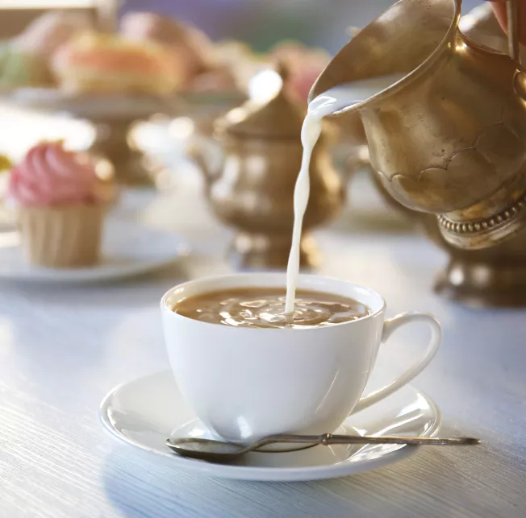
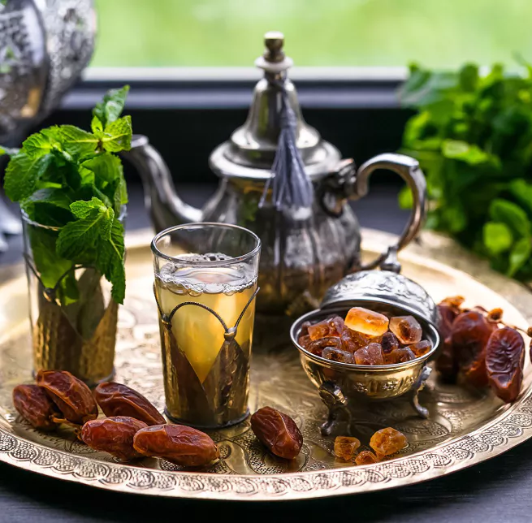
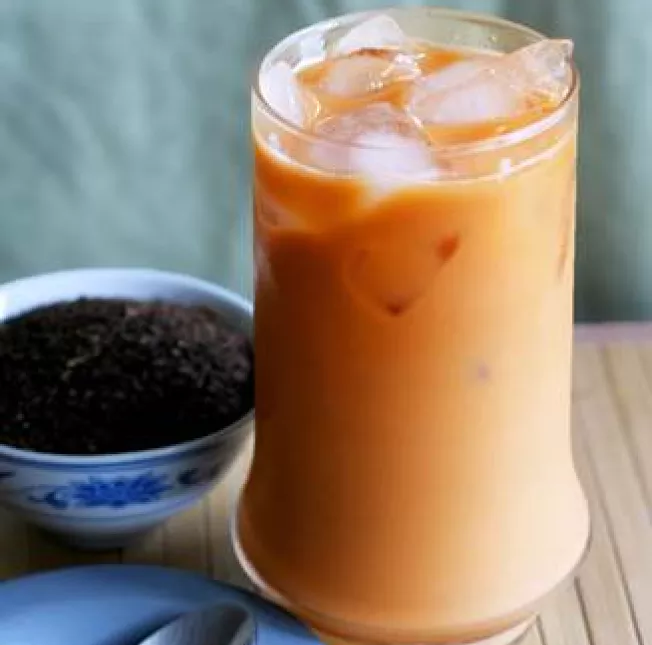

TE' IN INGHILTERRA
Il più famoso tè inglese è un tè nero dal gusto ricco che si abbina perfettamente con zucchero e latte.
Gli inglesi prendono il tè con il latte! Questo però non deve mai superare il 20% del contenuto totale e va versato nella tazza prima del tè. Questo perché sembra che l'usanza sia nata dalla necessità di non macchiare e incrinare la porcellana, versando un goccio di latte freddo prima del tè.
Il primo posto se lo aggiudica Sketch, è sicuramente il posto da scegliere per un'esperienza fantastica.
PREPARAZIONE:
Per un perfetto tè all'inglese fate bollire l'acqua, dopodiché versate il tè sfuso calcolando circa 2g per ogni 100ml di acqua. Lasciate in infusione nei tempi indicati sulla confezione e servite nella tazza aiutandovi con un colino. Ovviamente lo zucchero rigorosamente in zollette.
TE' IN MAROCCO
Il tè marocchino è una miscela di tè verde e foglie di menta, la bevanda è molto addolcita dallo zucchero, versato con gesti lenti e calcolati negli alti bicchieri.
Vogliamo parlarvi del rito del tè in Marocco, una cerimonia chiamata Atay Naa Naa, simbolo per eccellenza di ospitalità.
La medina di Marrakech, un labirinto di bellezza storica, ospita numerosi punti di tè che sono segreti ben custoditi tra la gente del posto.
PREPARAZIONE:
Il tè che viene preparato durante la cerimonia è un tè alla menta, realizzato mescolando foglie di tè verde, soprattutto la varietà cinese Gunpowder (polvere da sparo), menta nanà e molto zucchero.
TE' IN THAILANDIA
Il tè nero bevuto con latte condensato, zucchero e spezie. Le alte tazze dove viene servita dai venditori sono ambiti souvenir.
Può essere servito sia caldo che freddo, una variante servita solo con la dolcezza dello zucchero, senza l'aggiunta del latte e versato su ghiaccio. Esiste anche il tè thailandese al lime: simile al tè freddo thailandese nero, ma con l'aggiunta di lime e talvolta di menta.
il tè thailandese caldo invece è spesso servito durante le ore della mattina, il tè caldo thailandese nero: simile al tè caldo thailandese, ma servito senza l'aggiunta di latte.
PREPARAZIONE:
Il tè thailandese è preparato con una base di tè nero forte di Assam o Ceylon, a cui vengono aggiunte spezie come l'anice stellato, il tamarindo e talvolta la vaniglia o la cannella, ingredienti che gli conferiscono il caratteristico sapore dolce e leggermente piccante.